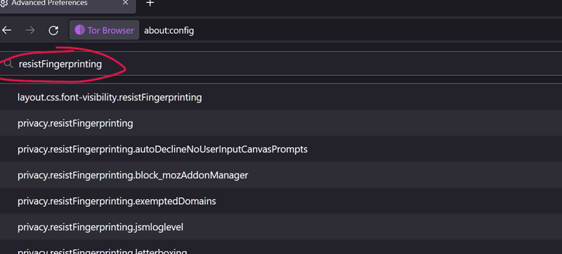

1. Type about:config into the address bar
br>
2. Click the accept the risk button
br>
3. Type resistFingerprinting into the search bar
br>
4. Doubleclick the "true" until it goes to "false"
br>
5.
Go back to the meme maker and you can now generate your own memes